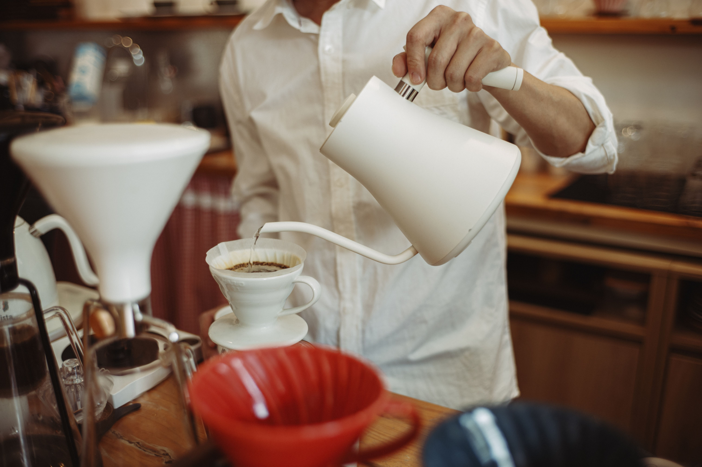

About Ilha Tea
At Ilha Tea, every drink begins with carefully selected loose-leaf tea and fresh ingredients. We brew each order individually and prepare our toppings daily to highlight the natural flavors of every beverage.
Our shop is designed to be a place where people can slow down, connect with friends, and enjoy thoughtfully prepared drinks in a relaxed environment. Whether you are discovering Taiwanese tea for the first time or stopping in for your favorite order, we hope every visit feels welcoming and memorable.
Thoughtfully brewed
Every drink is made to order with premium tea, fresh fruit, and house-made toppings. We focus on quality, balance, and simple ingredients so that each cup feels refreshing and carefully prepared.